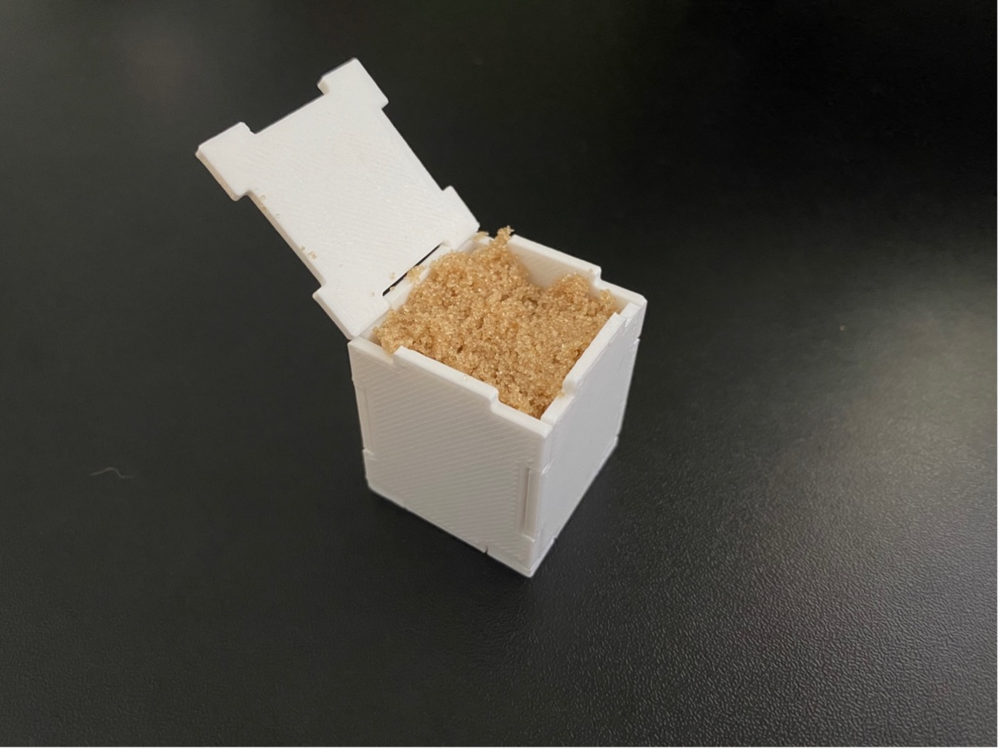
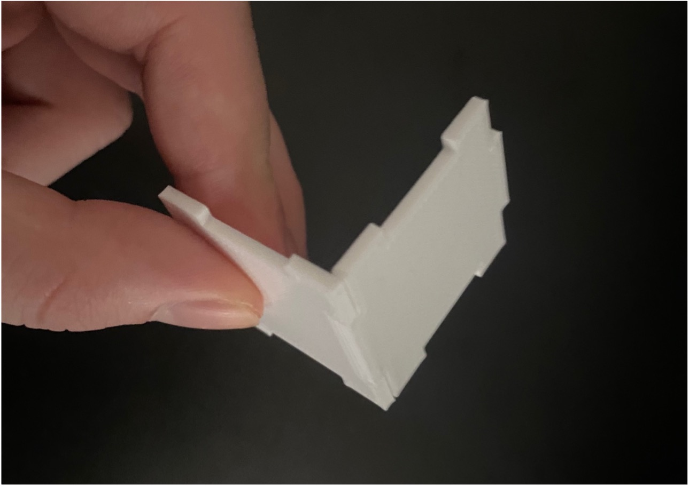

A4: Subtractive Manufacturing!
By Jessica Hord

Documentation
This ended up being a lot more difficult than I expected! I first did a more complicated shape, but I was having a really hard time getting them to fit together, so I went to a simpler shape and focused on the fit.
Here was my first design. The print failed, but I also realized the sizing wouldn’t work with the failed pieces.

My second design was simple, but I spent a lot of time trying to get the fit to about a .15 mm difference in size for the tabs.
The corner pieces fit nicely, but the top and bottom were still loose in the first iteration, so I went back and adjusted, and reprinted.

You can see the looseness of the bottom piece in the picture below.
Here’s the final piece after the adjustments and reprinting!
Here is it holding some sugar!
Source Files
Rhino fileSTL file
Cura file
gCODE